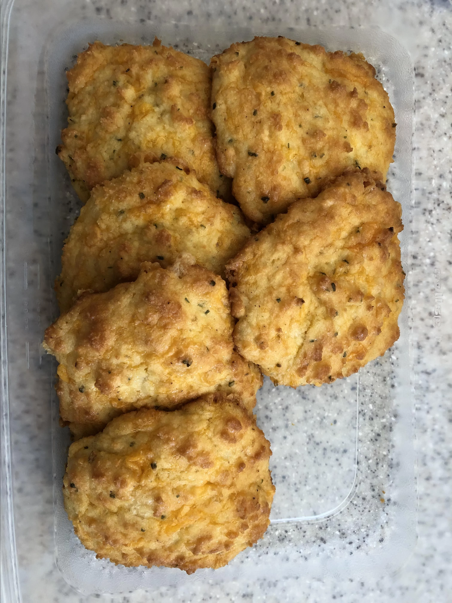

Cheesy Keto Biscuits

A tasty lookin' Keto friendly cheesy biscuit recipe! Recipe Link.
Recipe logistics
- Prep: 20 mins
- Cook: 20 mins
- Total: 40 mins
- Servings: 9
- Yield: 9 large biscuits
Nutrition (per serving)
- 329 Calories
- Protein: 16.7g
- Carbs: 7.2g
- Fat: 27.1g
- Cholesterol: 118.1mg
- Sodium: 391.3mg
Ingredients
- 2 cups almond flour
- 1 tablespoon baking powder
- 2 1/2 cups shredded cheddar cheese
- 4 eggs
- 1/4 cup half-and-half
Steps
- Preheat the oven to 350 degrees F (175 degrees C). Line a baking sheet with parchment paper.
- Combine almond flour and baking powder in a large bowl. Mix in Cheddar cheese by hand. Create a small well in the middle of the bowl; add eggs and half-and-half to the center. Use a large fork, spoon, or your hands to blend in the flour mixture until a sticky batter forms.
- Drop 9 portions of batter onto the prepared baking sheet.
- Bake in the preheated oven until golden, about 20 minutes.